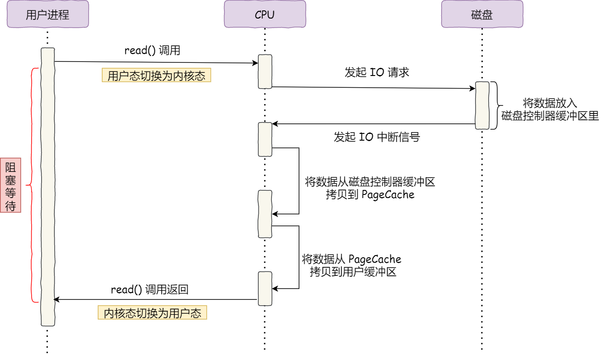
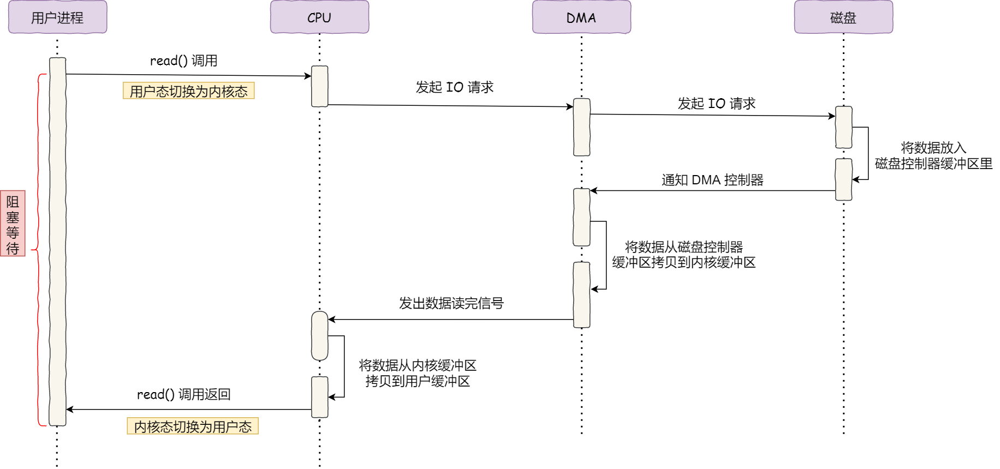

细说Linux零拷贝
简介
磁盘可以说是计算机系统最慢的硬件之一，读写速度和内存相差了10倍以上，所以针对磁盘读写的优化非常多，比如零拷贝、异步IO等等，目的就是提高系统的吞吐量，减少磁盘的访问次数。
DMA
DMA是什么？在没有DMA之前，磁盘的IO过程是这样的：
CPU发送指令给磁盘的控制器。- 磁盘控制器收到指令后，开始准备数据，把数据放到磁盘控制器的缓冲区中，然后产生一个中断。
CPU收到中断后，会停止当前的工作，把磁盘控制器的缓冲区中的数据拷贝到自己的寄存器中，再把寄存器中的数据拷贝到内存中。这期间CPU是无法执行其他任何指令的。
用图来描述大概是这样：

可以看到，整个数据传输过程CPU都要亲自参与，如果数据量大的话，那将耗费大量CPU的资源。所以后来就发明了DMA技术，也就是直接内存访问（Direct Memory Access）。简单来说就是，数据传输的工作全部交给DMA来管理，CPU可以去处理其他事情。如下图所示：

具体过程是这样的：
- 用户进程调用
read方法，向操作系统发起IO请求，进程进入阻塞状态。 - 操作系统收到请求后，进一步把这个请求发送给
DMA，然后CPU就去处理其他事情了。 DMA收到请求后，把请求发送给磁盘。- 磁盘收到请求后，把数据读取到磁盘控制器的缓冲区中。当缓冲区空间满了，磁盘向
DMA发送中断信号。 DMA收到信号，将磁盘控制器缓冲区中的数据拷贝到内核缓冲区中。当内核缓冲区读取了足够的数据，向CPU发送中断信号。CPU收到信号，将数据从内核缓冲区拷贝到用户空间的缓冲区中，read方法返回。
整个过程不再需要CPU亲力亲为。
传统的文件传输
如果服务端要传输文件，最简单的方式就是：将磁盘上的文件读取出来，然后通过网络协议传输给客户端。
对于传统IO，数据的读写都通过从用户空间到内核空间的来回拷贝，而内核空间的数据则通过操作系统层面的IO接口从磁盘进行读写。整个过程如下图：

这期间一共发生了4次用户态和内核态的上下文切换。因为发生了read和write两次系统调用，每次都要先从用户态切换到内核态，等内核执行完任务后再切换到用户态中。上下文切换的成本并不小，平均一次切换大概要几十纳秒到几微秒。在高并发的场景下，会影响系统的性能。
其次，该过程还发生了4次数据的拷贝。其中两次是DMA的拷贝，另外两次是CPU的拷贝。
- 首先，
DMA会将磁盘上的数据拷贝到内核缓冲区。 - 然后
CPU将内核缓冲区的数据拷贝到用户缓冲区。 CPU再把用户缓冲区的数据拷贝到socket缓冲区。- 最后
DMA把socket缓冲区中的数据拷贝到网卡缓冲区中。
这种简单的数据传输方式效率低下，存在冗余的上下文切换和数据拷贝。针对这两点，可以进行优化。
优化文件传输
首先来看，怎样才能减少上下文的切换呢？
读取磁盘数据的时候，之所以要发生上下文的切换，是因为用户空间没有权限操作磁盘或者网卡，所以只能调用操作系统提供的接口，由内核完成相关的任务。一次这样的调用就要发生两次上下文的切换，首先从用户态切换到内核态，当内核执行完任务后，再切换回用户态交由进程代码执行。
也就是说，想要减少上下文的切换，就需要减少系统的调用。
那么如何减少数据拷贝的次数呢？
传统的数据传输要经历四次数据拷贝，在这个过程中从内核缓冲区拷贝到用户缓冲区，再从用户缓冲区拷贝到socket缓冲区这一过程其实是没有必要的。因为数据传输的场景中，在用户空间我们并不会对数据进行修改，所以数据没有必要经过用户空间。
零拷贝
零拷贝的技术实现方式有两种：
mmap + write
前面说到read()函数调用会把内核缓冲区的数据拷贝到用户缓冲区，为了减少这一步的开销，我们使用mmap()替换read()函数。mmap()会直接把内核缓冲区之中的数据映射到用户空间。这样，内核空间和用户空间就不再需要数据的拷贝了，类似下图：

具体过程如下：
- 用户进程调用
mmap()，DMA把磁盘的数据拷贝到内核缓冲区中，然后用户空间和内核空间会共享该缓冲区。 - 用户进程再调用
write()，操作系统直接将内核缓冲区的数据拷贝到socket缓冲区，这一切都发生在内核态，由CPU完成。 - 最后
DMA再把socket缓冲区中的数据拷贝到网卡缓冲区。
所以通过mmap + write实现的零拷贝仍然需要四次上下文切换，但减少了一次数据的拷贝。
sendfile
Linux 2.1提供了一个专门用于发送文件的系统调用函数sendfile()，其函数如下：
1 | ssize_t sendfile(int out_fd, int in_fd, off_t *offset, size_t count); |
前两个参数是目的端和源端的文件描述符，后两个参数是源端的偏移量和复制数据的长度，返回值是实际复制数据的长度。
这个函数直接替代了read()和write()，所以减少了两次上下文的切换。其次我们不再需要把数据拷贝到用户态，这样就只有三次数据的拷贝。

但这还不是最高效的零拷贝技术。如果网卡支持SG-DMA技术，则可以进一步减少通过CPU把内核缓冲区中的数据拷贝到socket缓冲区这一步骤。
如果是Linux系统，可以通过ethtool -k eth0 | grep scatter-gather命令查看网卡是否支持SG-DMA技术。
从Linux 2.4版本开始，如果网卡支持SG-DMA技术，sendfile函数底层的调用会发生变化：
- 首先，
DMA将磁盘上的数据拷贝到内核缓冲区。 - 缓冲区描述符和数据长度传到
socket缓冲区中，这样网卡的SG-DMA控制器可以直接将内核缓冲区中的数据拷贝到网卡缓冲区中，不再需要经过socket缓冲区。于是又减少了一次数据的拷贝，现在只需要两次数据拷贝就可以完成整个过程。

这就是所谓的零拷贝技术。现在我们不用再使用CPU来拷贝数据，全程通过DMA进行传输。
PageCache
前面的提到的数据传输过程，第一步都是要把数据从磁盘中拷贝到内核缓冲区中。这里的内核缓冲区就是磁盘高速缓存（PageCache）。
由于读写磁盘比读写内存的速度慢多了，所以我们使用DMA把磁盘中的数据拷贝到内存中进行操作。但是，内存的空间远远小于磁盘，所以内存每次只能拷贝一部分的数据。那么内存是如何选择的呢？
我们运行程序的时候，具有局部性，就是说刚才被访问到的数据很有可能在短时间内再次被访问，于是我们可以使用PageCache来缓存最近被访问到的数据，当空间不足时就淘汰最久没有被访问过的缓存，也就是使用了最近最少使用算法。
所以读取磁盘数据的时候，会优先在PageCache找，如果有数据就直接返回；否则再从磁盘中获取，然后缓存到PageCache中。
还有一点，读取磁盘数据的时候，磁头会先旋转到数据所在的扇区，然后再开始顺序读取，这个物理动作是十分耗时的。为了降低这个影响，PageCache使用了预读的功能。
比如，read()方法每次只读取32KB的数据，那么一开始read()读取0-32KB的数据，内核会把后面的数据也预先读取到内核缓冲区中。这样read()读取后面的数据时成本就降低了。
所以总的来说，PageCache主要有缓存最近使用的数据和预读这两个功能。
但是，如果读取的是GB级别的大文件，就不应该使用PageCache，也就是说不应该使用零拷贝技术。这是因为如果把这些大文件拷贝到内存中，内存很快就被占满了，其余的热点小文件就不能使用到PageCache了，这样反而会导致读写数据的性能降低。
大文件的读写
那么针对大文件应该使用什么方式读写呢？
首先回到最初，我们调用read()读取文件时，进程会阻塞于read()方法，对于阻塞的问题，我们可以使用异步IO来解决。

具体流程如下：
- 首先应用进程向内核发起读请求，但是可以直接返回，不用等待数据返回。
- 内核向磁盘发起请求，磁盘把数据拷贝到磁盘控制器缓冲区后，产生一个中断给内核。
- 内核把磁盘控制器缓冲区中的数据拷贝到用户缓冲区后，用户进程收到通知，进行后续的处理。
也就是说异步IO全程没有涉及到内核缓冲区，这样的IO也叫做直接IO。所以，针对高并发以及大文件传输的场景，应该使用这样的异步IO来代替零拷贝技术。
最后，针对整个业务场景，我们在传输文件的时候，可以根据文件的大小选择传输的方式：
- 传输大文件时，使用异步
IO。 - 传输小文件的时候，使用零拷贝的方式。
在nginx中，我们可以通过配置实现这个功能：
1 | location / { |
当文件大小小于1024m，使用异步IO；否则使用零拷贝。